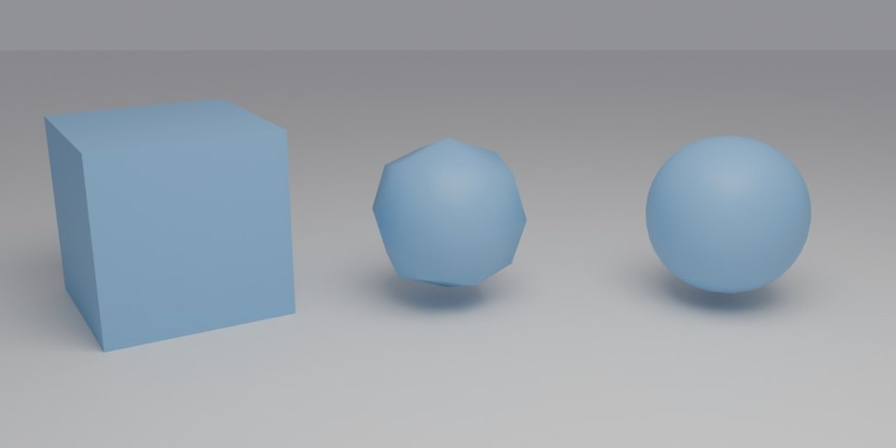

Bonus lesson
The Subdivision Surface Modifier
Smooth, rounded shapes do not need thousands of vertices. With the Subdivision Surface modifier (people often say "Subsurf" or "Subdiv") you model a simple, low-vertex mesh and Blender splits its faces into smaller ones, giving it a smooth look. The manual says it avoids the need to keep huge amounts of data.
1. Add the modifier
Select an object and open the Modifiers tab, as in Lesson 7. Add Subdivision Surface from the Generate group. A faster way, from the manual: select the object and press Ctrl+1. That adds the modifier with Viewport levels set to 1. Ctrl+2 and Ctrl+3 use 2 and 3 levels. If the object already has the modifier, the shortcut only changes its level.

2. Levels: Viewport and Render
Levels Viewport is the number of subdivision levels you see while working. Render is the number used in the final image. The manual suggests keeping the Viewport number low so Blender stays fast, and using a higher Render number for the final image. It warns that higher levels create many more vertices and use more memory, which can make Blender hang or crash. It also says not to set Viewport higher than Render.
3. Subdivision is not Shade Smooth
The manual points out that this is a different operation from Smooth Shading (the bonus lesson on Shade Smooth). Subdivision adds real geometry and rounds the shape. Shade Smooth only changes how the surface is lit.
4. Control the roundness
A cube becomes a ball because Catmull-Clark subdivision rounds off every edge. The manual gives two ways to keep edges firm. You can add extra edge loops (for example with Loop Cut and Slide) near the edges you want to stay sharp. Or you can use Weighted Edge Creases: select edges and change the crease value in the Transform panel of the Sidebar, or press Shift+E. A higher value makes the edge more resistant to smoothing.
Read the manual page on the Subdivision Surface modifier.
Exercise
Add a cube and press Ctrl+3. Then add one Loop Cut near each edge in Edit Mode and watch the corners get firmer. Try creasing one edge with Shift+E and compare.